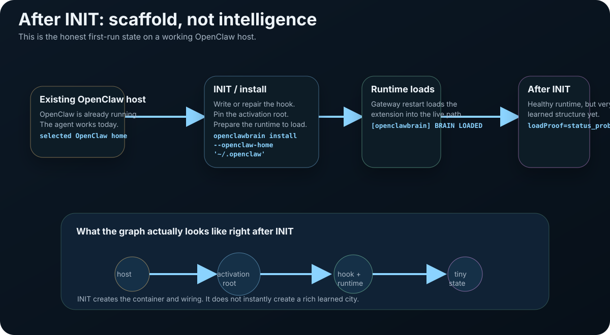
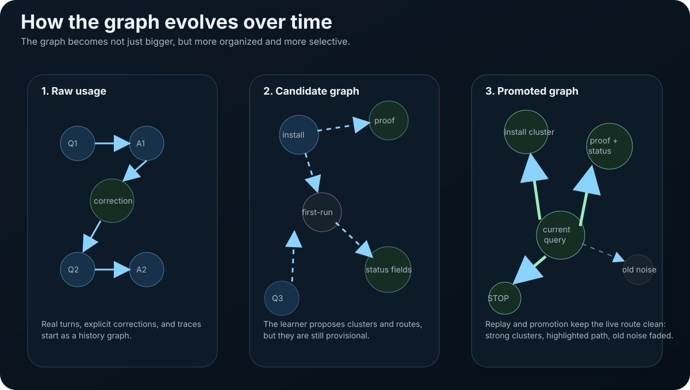
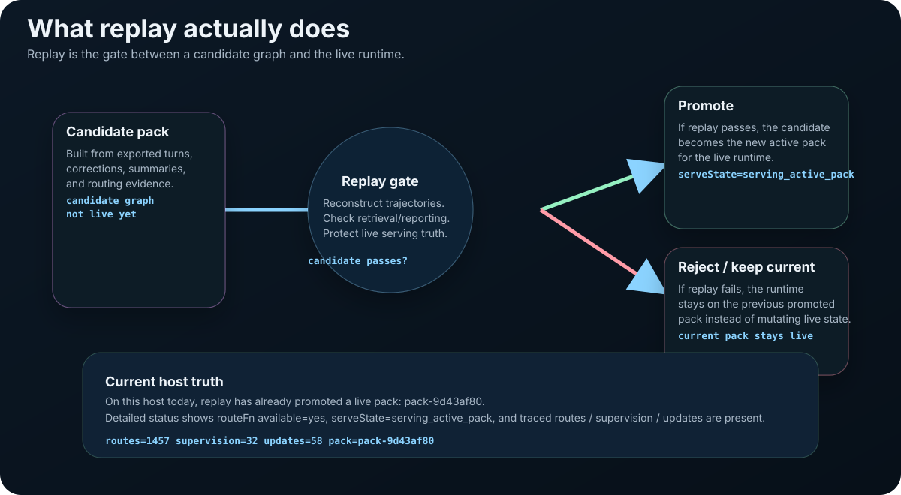
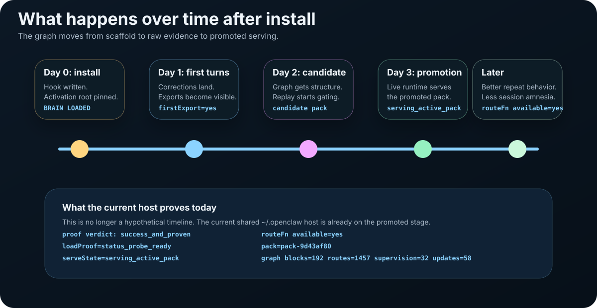

Install, runtime, plugin load, startup breadcrumb, runtime-load proof, and detailed status all aligned.
OpenClawBrain lifecycle
What happens to your history after install.
The public story starts on an existing OpenClaw host, not in a toy graph. On the exercised host at
/Users/guclaw/.openclaw, the latest proof bundle returned success_and_proven.
The runtime is already serving a promoted pack, and the learned route function is available.
This page explains the full chain in one pass: init gives you the attachment boundary, harvest turns your surfaced history into candidate material, replay gates promotion, and the live runtime serves bounded context instead of raw-history prompt sprawl.
Real host snapshot: what the healthy lane proves today
This is not generic AI-memory marketing. It is a real host surface captured on March 27, 2026 after install, runtime, and proof signals aligned.
Detailed status reports serve state=serving_active_pack and routeFn available=yes.
The strongest live block is human-label-harvest, which matches the product story.
Plus 32 supervision artifacts and 58 updates on the traced learning surface.
Source surfaces: detailed status, proof summary, and the exercised host bundle captured March 27, 2026.
The story should fit in three ideas
If the page says more than this before it says these three things, it is telling the story backwards.
Read the important things you already have
Conversations, memory notes, docs, and corrections become candidate graph material without dumping them wholesale into the prompt.
Learn in the background and only serve promoted packs
Candidate structure is replay-gated before promotion. The live runtime serves proven packs, not half-written learning artifacts.
Inject a small useful slice
Summaries help navigation, raw source expands for detail, and corrections can win when history conflicts. The prompt stays bounded.
What the graph looks like after INIT
Right after init, the graph is a scaffold, not a miracle. That is the correct product behavior. Init should make the runtime attachable and inspectable, not pretend the system already learned from months of real work.
Earlier init runs stayed tiny on purpose
An earlier captured init run produced 3 nodes and 4 edges. That is useful because it makes the first-run state visible instead of mystical.
The initial pack is still a baseline, not a mature brain
The current host still retains an initial pack with 8 blocks, 0 human labels, and 0 structural ops for split, merge, prune, and connect.

BRAIN LOADED. The learned graph is still small. That is healthy.
Install gives you the live attachment boundary. The graph becomes interesting only after real turns, explicit corrections, exports, replay, and promotion.
What gets harvested - and what does not
This is the missing middle of the story. You already have conversations, memory markdown, docs, and corrections scattered across your workspace. Harvest is the auditable step that turns those human-facing surfaces into candidate graph material without turning the whole filesystem into prompt sludge.
Exported turns become searchable navigation
Bulk conversation history is compacted into summaries that help the runtime decide where to look. Raw source stays available for exact expansion later.
Operator-written notes stay legible
Memory notes remain human-readable, but the harvester can also type them into candidate graph material the runtime can serve from later.
Explicit corrections become authority
When a user or operator states current truth directly, that typed correction can outrank a stale summary or recap once it is promoted.

Memory note to correction memory
---
type: correction
---
Use the staging endpoint for tests.
Never hit production in test runs.The harvester reads the note, keeps the file human-readable, emits a compact navigation summary, and types the explicit correction so it can later win over a stale recap.
Conversation correction to ranked authority
User: Use the staging endpoint for tests.
Agent: [uses production endpoint]
User: No. Staging. Always staging for tests.The correction turn becomes a typed correction event. Summaries may still help navigation, but the correction is the durable current-truth layer that wins when they disagree.
Correction memory
Explicit corrections are current-truth authority. They are the first thing that should win when old recap disagrees.
Raw source
Raw turns and files keep the exact quotes available for drill-down when a summary is not precise enough.
Summary / LCM
Summaries stay cheap to search across bulky history. They tell the runtime where to look, not what should currently win.
What the harvester skips: binary files, credentials,
.env files, anything outside the declared OpenClaw home,
and anything the operator has not explicitly exported or marked as memory. The system does not crawl your filesystem. It reads what you gave it.
One-line rule: use summaries as a search abstraction over history; use typed correction memory as the durable current-truth layer.
Then what happens: raw history, candidate graph, promoted graph
The graph evolves in layers. First you have raw usage. Then the learner forms candidate structure from exports, labels, and traces. Then replay decides whether that candidate deserves promotion into the live runtime.

- Raw usage: real turns, explicit corrections, and traces start as ordinary substrate history.
- Candidate graph: exports and learning create provisional structure that is still not live.
- Promoted graph: only replay-passing structure becomes the runtime-visible active pack.
What replay actually does
Replay is the gate between “we learned something” and “the live runtime is allowed to believe it.” Without replay, one bad candidate could mutate serving truth on the hot path.

- No replay: candidate structure exists, but the runtime has no honest reason to trust it yet.
- Replay passes: the candidate can be promoted into the live runtime.
- Replay fails: the current promoted pack remains live instead of breaking the serve path.
How the graph evolves over time on the current host
The exercised host gives a clean storyline. The active promoted pack was built from real event ranges, real feedback, and replay-gated promotion.
That evidence now materializes as a 192-block graph with traced learning updates.
Init proves attachment, not maturity
Init gives a tiny graph. Structural ops are still zero. The operator can prove attachment and load, but there is not much learned structure to inspect yet.
The live pack shows real learning surfaces
The current pack has 33 human labels, 32 supervision artifacts, 58 updates, and already shows split, merge, prune, and connect behavior.

- Current strongest block:
runtime-graph-173ddc7d:human-label-harvest. - Current structural change:
split:1,merge:1,prune:1,connect:3with6created edges. - Current learned route surface:
routes=1457,supervision=32,updates=58. - Current serve truth: the runtime is serving a promoted immutable pack, not mutating live state on the hot path.
Use the install-first lane, then come back here for the deeper story
The homepage is the canonical place for commands. This page exists to explain why the install lane behaves the way it does and why a healthy host can still move through multiple lifecycle states over time.
Install / upgrade
The public front door with the pinned-home commands and top-level truth signals.
Proof
The healthy reference host and the durable bundle boundary.
Troubleshooting
What to check when your host is not yet lining up with the healthy proof surface.
GitHub
Source code, packages, and architecture notes.